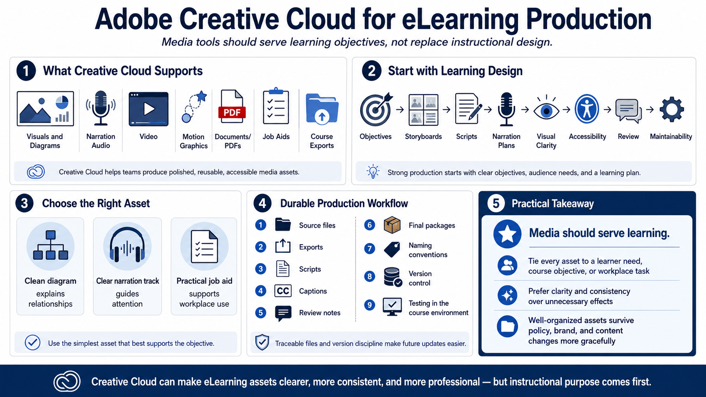

Course Summary and Key Takeaways
Connecting to LMS... Progress: in progress

Narration
Adobe Creative Cloud can support eLearning by helping teams produce polished, reusable, accessible media assets. Those assets may include visuals, diagrams, narration, video, motion graphics, documents, job aids, and exports for course delivery. The tools support production, but they do not replace instructional purpose, audience analysis, or learning design.
Strong eLearning production starts with objectives, storyboards, scripts, narration plans, visual clarity, accessibility, review, and maintainability. When those pieces are clear, production tools become more effective. Designers can create the right asset in the right format instead of producing media simply because the tool makes it possible.
The goal is not to use every application, every effect, or every format. The goal is to create learning materials that learners can understand, complete, apply, and revisit. A clean diagram, a clear narration track, or a practical job aid may be more valuable than a complex animation if it supports the objective better.
Durable production depends on organization. Keep source files, exports, scripts, captions, review notes, and final packages traceable. Use naming conventions and version discipline. Test media in the course environment. A course that is easy to update will survive policy changes, brand updates, and future revisions more gracefully.
The practical takeaway is simple: media should serve learning. Creative Cloud can help make course assets clearer, more consistent, and more professional. But every asset should be tied to a learner need, a course objective, or a workplace task. That is what turns production work into useful eLearning.